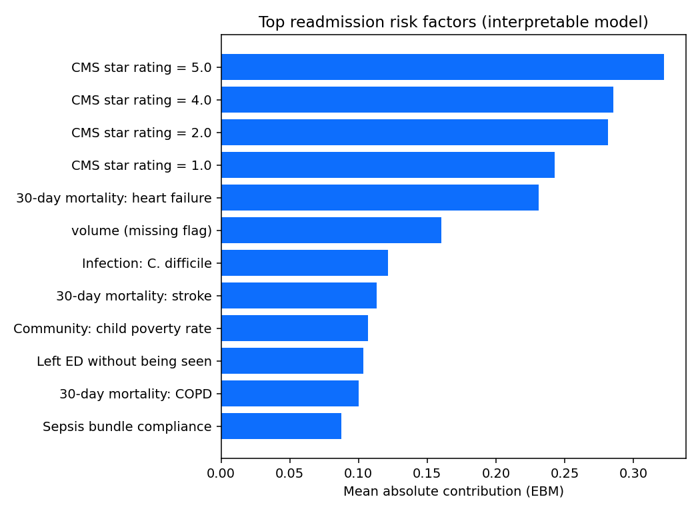
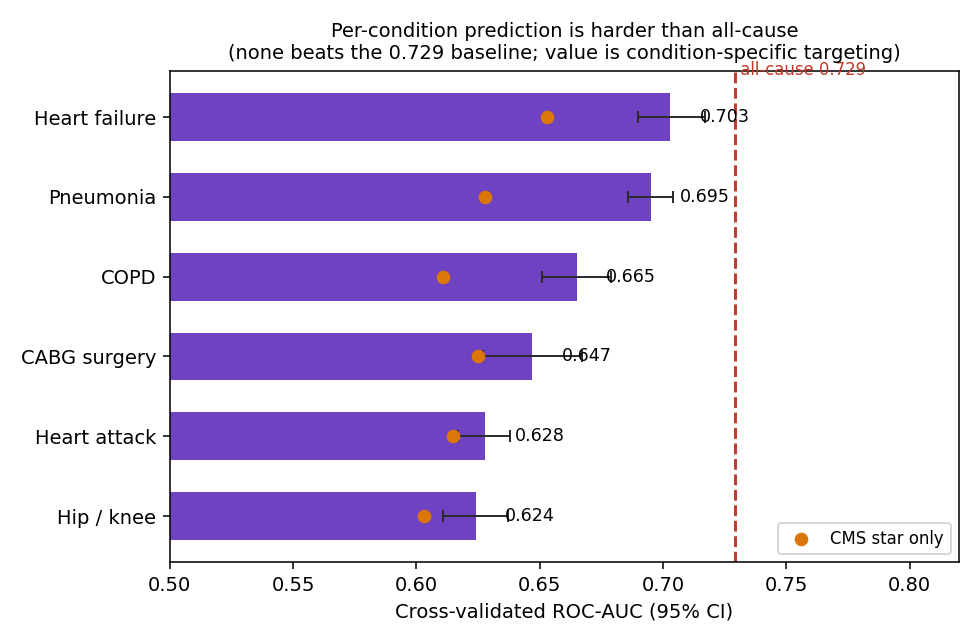
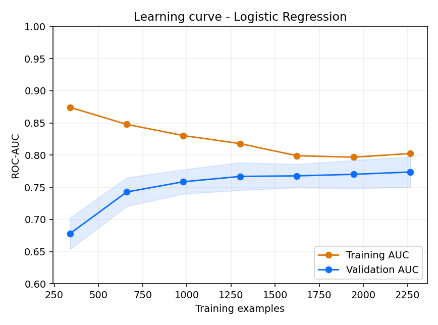
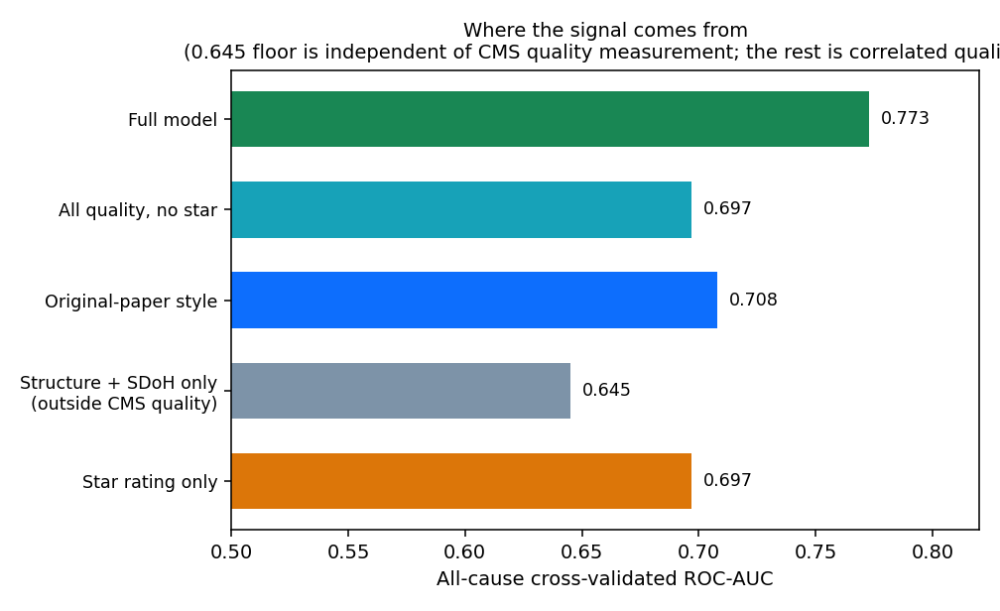

Some hospitals readmit far more patients than others. Compare 2,800+ U.S. hospitals on avoidable readmissions, overall and for your specific condition, in plain language.
Search by hospital name or your state. Then pick the condition you care about to see how often that hospital readmits those patients compared with what's expected.
Ratings come from each hospital's official Medicare Excess Readmission Ratio, how its 30-day readmissions compare with what's expected for hospitals treating similar patients. A value above 1.0 means more readmissions than expected. This describes the hospital, not any one person.
A "30-day readmission" is when a patient is admitted again within a month of going home. It usually means something went wrong with recovery, and where you're treated changes how likely that is.
Medicare patients is readmitted within 30 days of leaving the hospital, about 3.8 million readmissions a year in the U.S.
is the average cost of a single readmission, a burden on patients, families, and taxpayers, on top of the health risk of another hospital stay.
Two hospitals treating similar patients can have very different readmission rates. Medicare even reduces payments to hospitals with too many, because many are avoidable.
You have the right to choose where you get care (except in a true emergency). Comparing hospitals ahead of a planned surgery or for an ongoing condition like heart failure can help you pick a place that's more likely to get you home, and keep you there.
No matter which hospital you choose, these evidence-based habits around discharge are some of the biggest protectors against an avoidable readmission.
General education adapted from Medicare and AHRQ patient guidance, not a substitute for your own care team's advice.
Researchers (including the work behind this site) found that a handful of measurable hospital qualities predict whether a hospital readmits more or fewer patients. Move the controls to see how a hospital's risk changes. It runs entirely in your browser.
Estimated chance this hospital readmits more patients than expected. An illustration of the drivers, not a score for any specific hospital or person.
This isn't a guess. The hospital comparisons use official Medicare quality data, and the underlying research model was tested with the same rigor expected of medical research.
Accuracy (ROC-AUC) of the research model at telling higher-risk from lower-risk hospitals, cross-validated . 0.5 is a coin flip; 1.0 is perfect.
U.S. hospitals analyzed, using five official CMS Care Compare datasets from the latest (2026) refresh.
Accuracy using the CMS star rating alone. The full model adds more CMS quality signals (mortality, infections, patient experience) that are correlated with, but not derived from, readmissions.



The model is interpretable, every prediction can be traced to specific quality measures, and it's "leakage-free": it never uses information that would let it cheat. We tested it for overfitting and chose a model whose training and validation accuracy stay close. It's research software for comparing hospitals, not a medical device.
It uses only public CMS data, no private patient records, so any researcher, journalist, or regulator can reproduce it. Methods and code are documented in a companion research repository.

Being honest about a fair concern: most of the model's accuracy comes from a hospital's broader CMS-measured quality, which is correlated with readmissions. Features fully outside the CMS quality system (size, ownership, community income and rurality) predict at only 0.645 on their own.
Two things keep it credible. First, no feature is derived from the readmission ratio (every readmission-defining quantity is excluded), so this is correlated quality, not leakage. Second, the CMS star rating partly bakes in readmissions, yet with the star removed the model still reaches 0.697 from genuinely distinct measures (deaths, infections, surveys), up from 0.66 in the earlier study. The full model's edge over the star alone is real but modest.
Avoidable readmissions harm patients and cost Medicare an estimated ~$26 billion a year, with roughly $17 billion considered potentially avoidable. Reducing them is an explicit U.S. national priority, written into federal law.
When patients can easily see which hospitals are safest for their condition, three things happen: people get better care, families avoid needless return trips, and hospitals compete to improve, lowering avoidable readmissions nationwide. This tool turns data the government already publishes into something a worried family can actually use.
Created by Rajat Goel, a healthcare data scientist and doctoral researcher in artificial intelligence, as part of a broader effort to use transparent AI to make U.S. healthcare safer, fairer, and more accountable with the data it already collects.
Research methods and reproducible code are maintained in a companion repository. The hospital data shown here is official CMS Care Compare data; this site adds plain-language access and condition-level comparison.
It is the hospital's official Medicare Excess Readmission Ratio: how its 30-day readmissions compare with what is expected for hospitals treating similar patients. 1.0 is average. Below 1.0 means fewer readmissions than expected (better); above 1.0 means more (worse).
No. This is general information to help you compare hospitals. It describes a hospital's average performance, not what will happen to you. Always talk to your own doctor about your care and where to receive it.
From the U.S. government's official CMS Care Compare program (Medicare), refreshed in 2026. The same public data hospitals are measured on. We add plain language and condition-level comparison.
Hospitals vary by service line. A hospital can be excellent at hip and knee recovery yet struggle with heart-failure transitions. Click "by condition" on any result to see the full breakdown.
Only hospitals that report enough Medicare readmission cases for at least one tracked condition appear here. Very small hospitals and some specialty facilities may not have reportable data.
A research model's estimate of how likely a hospital is to readmit more patients than expected, based on its broader quality profile. It is a secondary signal; the headline rating uses the hospital's real reported Medicare ratio.